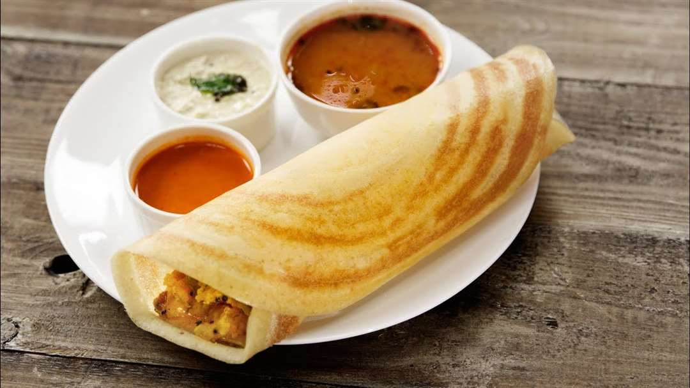
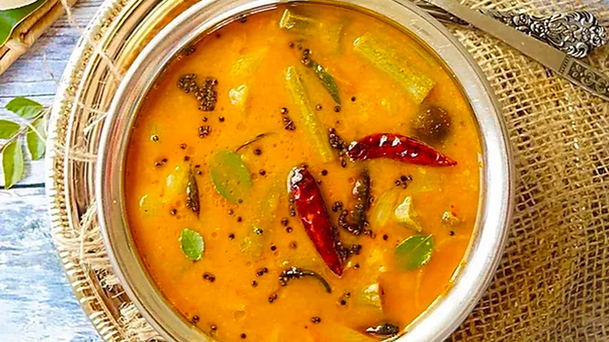
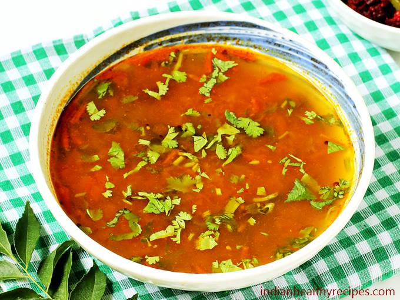
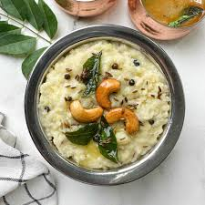
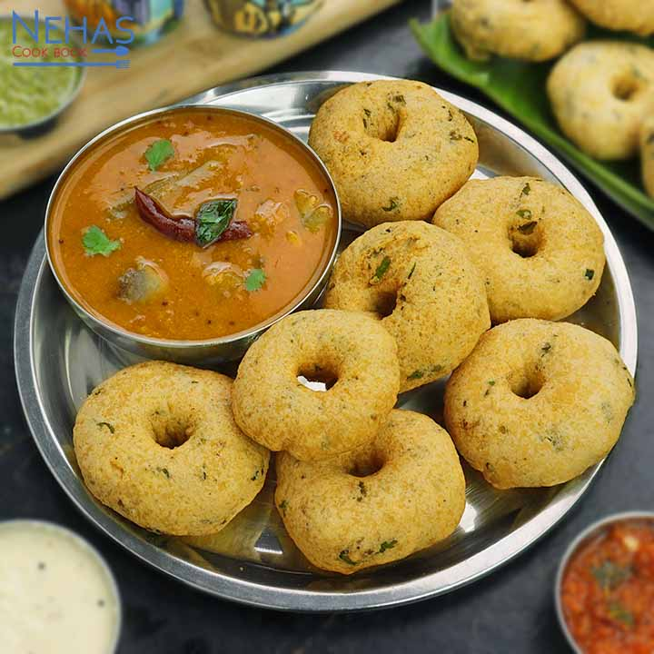
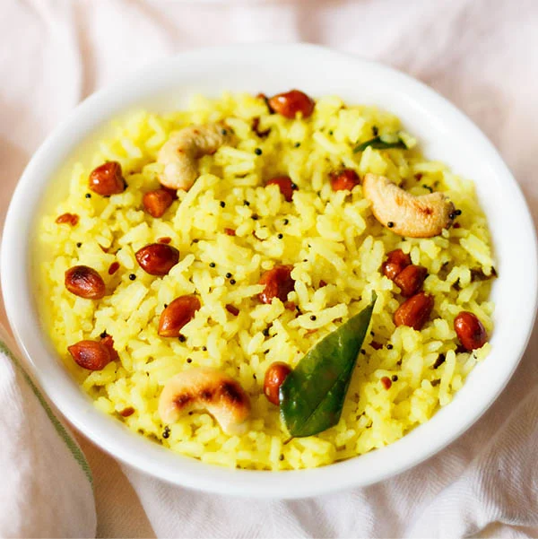
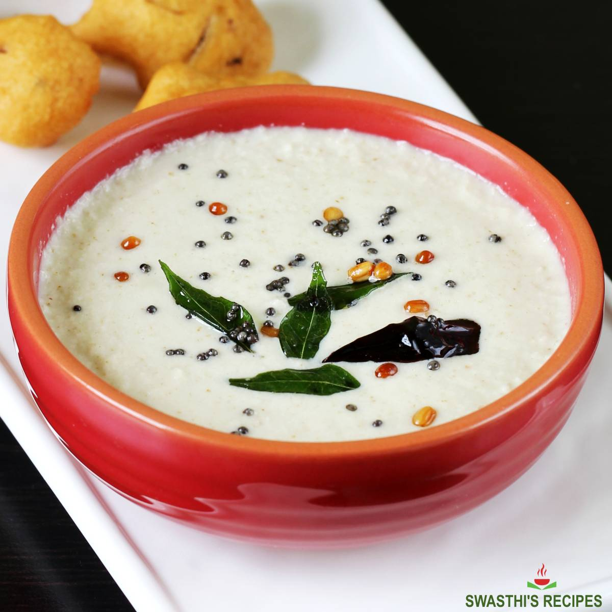
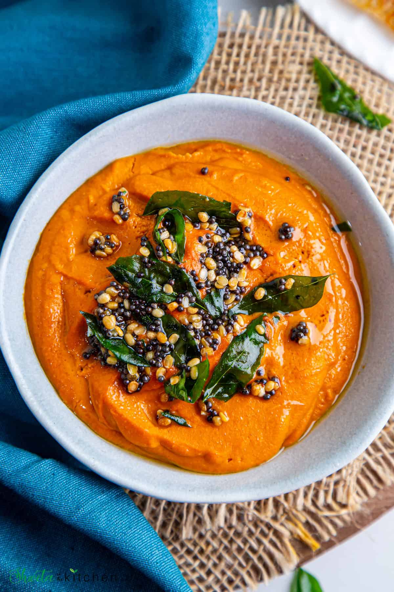

Idli
- 1 cup urad dal
- 2 cups idli rice
- Salt to taste
Instructions
- Soak dal and rice separately.
- Grind and ferment overnight.
- Steam in idli molds for 10-12 mins.

Masala Dosa
- Dosa batter
- Boiled potatoes
- Onions, mustard seeds
Instructions
- Prepare potato masala.
- Spread dosa on pan, add filling.
- Fold and serve with chutney.

Sambar
- Toor dal
- Veggies
- Sambar powder, tamarind
Instructions
- Cook dal and veggies.
- Add tamarind and spices.
- Temper with mustard and curry leaves.

Rasam
- Tamarind pulp
- Tomatoes
- Rasam powder
Instructions
- Boil tamarind and tomatoes.
- Add rasam powder, simmer.
- Temper and garnish with coriander.

Ven Pongal
- Rice and moong dal
- Black pepper, cumin
- Ghee and curry leaves
Instructions
- Cook rice and dal until soft.
- Fry spices in ghee and mix in.
- Serve hot with chutney.

Upma
- Rava (semolina)
- Mustard, curry leaves
- Vegetables, ginger
Instructions
- Roast rava separately.
- Temper spices and sauté veggies.
- Add water, rava, cook till fluffy.

Medu Vada
- Urad dal
- Onions, chilies
- Black pepper, curry leaves
Instructions
- Soak and grind dal to thick batter.
- Add spices and shape vadas.
- Deep fry till golden.

Lemon Rice
- Cooked rice
- Mustard seeds, green chilies
- Lemon juice
Instructions
- Temper spices, mix with rice.
- Add lemon juice and mix well.
- Serve with pickle or papad.

Coconut Chutney
- Grated coconut
- Green chilies, ginger
- Tempering: mustard, curry leaves
Instructions
- Grind ingredients with little water.
- Temper and pour over chutney.
- Serve with dosa or idli.

Tomato Chutney
- Tomatoes
- Red chilies, garlic
- Tempering: mustard, urad dal
Instructions
- Sauté tomatoes, garlic, chilies.
- Grind to a smooth paste.
- Temper and mix in.